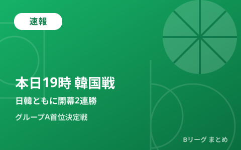

男子日本代表、本日19時に韓国戦 アジア大会グループA首位決定戦 日韓ともに開幕2連勝で激突

愛知国際アリーナ（IGアリーナ）で行われている「第20回アジア競技大会（愛知・名古屋2026）」バスケットボール競技で、男子日本代表は本日9月13日19時からグループA最終戦の大韓民国戦に臨みます。日本はインドネシア戦（98-53）、サウジアラビア戦（86-80）に連勝して2連勝で1次リーグ突破・準々決勝進出をすでに決めていますが、韓国もサウジアラビア戦（82-66）、インドネシア戦（102-48）に連勝しており、両者2連勝同士の直接対決はグループA首位通過を懸けた大一番です。
日本・韓国ともに開幕2連勝、直接対決で首位が決まる
グループAは日本・大韓民国・サウジアラビア・インドネシアの4カ国で構成され、総当たりの1次リーグを戦っています。前回の記事でお伝えした通り、日本は初戦のインドネシア戦を98-53、2戦目のサウジアラビア戦を86-80で制して開幕2連勝。一方の韓国も初戦のサウジアラビア戦を82-66、2戦目のインドネシア戦を102-48で制しており、両国とも2連勝で最終戦を迎えます。すでに両国とも1次リーグ突破・準々決勝進出は決まっているため、今夜の一戦は純粋にグループA首位通過を懸けた直接対決という位置づけです。
| 日程 | 日本の結果 | 韓国の結果 |
|---|---|---|
| 9月10日（木） | vs インドネシア 98-53で勝利 | vs サウジアラビア 82-66で勝利 |
| 9月11日（金） | vs サウジアラビア 86-80で勝利 | vs インドネシア 102-48で勝利 |
| 9月13日（日） | 日本 vs 大韓民国 19:00開始予定 | |
韓国はイ・ヒョンジュンが好調、Bリーグ経験選手にも注目
韓国は前所属が長崎ヴェルカのイ・ヒョンジュンが2試合連続で得点をけん引しており、初戦のサウジアラビア戦で23得点、2戦目のインドネシア戦でも24得点10リバウンドと安定した活躍を見せています。Bリーグでのプレー経験を持つ選手だけに、対戦相手としても国内ファンの注目度は高くなりそうです。
7月のW杯予選では79-81の接戦で敗戦、雪辱なるか
日本と韓国は2026年7月、FIBAバスケットボールワールドカップ2027アジア地区1次予選の最終戦（ウィンドウ3・第2戦）でも対戦しており、このときは終盤の逆転を許して79-81の2点差で敗れています。ホーキンソンが30得点を挙げる活躍を見せたものの届かず、日本はこの試合を含む4勝2敗で2次ラウンドに進みました。今回はアジア競技大会の舞台、しかも地元・愛知国際アリーナでの一戦となり、雪辱を期す絶好の機会と言えそうです。
観戦方法と今後の日程
本日の日本vs韓国戦は、U-NEXTが独占でライブ配信を行う予定で、地上波・BS・CSでのテレビ放送は予定されていません。1次リーグを終えた後、準々決勝は9月16日に予定されており、グループA首位で通過するか2位で通過するかによって、準々決勝の相手やその後のトーナメントの位置づけが変わってくる可能性があります。当サイトでは試合結果が判明次第、続報をお届けします。
Q. すでに突破が決まっているのに、なぜ首位争いが重要？
A. 決勝トーナメントの組み合わせはグループステージの順位に基づいて決まる方式のため、首位で通過できるかどうかは準々決勝以降の対戦相手や試合会場に影響します。詳細なレギュレーションは大会公式サイトでご確認ください。
出典：バスケットボールキング「イヒョンジュン23得点の活躍…アジア競技大会開幕、日本と同組の韓国が白星スタート」／バスケットボールキング「イヒョンジュンが24得点10リバウンドの躍動…男子韓国代表が100点ゲームでインドネシアに快勝」／バスケットボールキング「ホーキンソン30得点＆怒涛の猛追見せるも…バスケ日本代表が韓国に競り負け、4勝2敗でW杯予選2次Rへ」ほか
https://news.yahoo.co.jp/articles/c75aba717634d02b63b7fea2e6a49cfee30d36a7
https://news.yahoo.co.jp/articles/0e4c7aa5f9c54e399b93c3b8d070b12075a083b4
https://basketballking.jp/news/japan/20260706/622610.html